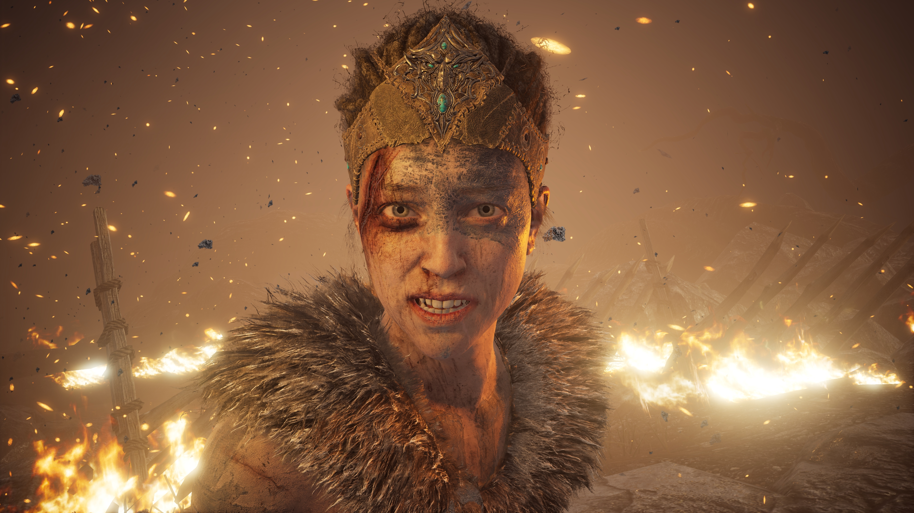

About Senua
Senua is a warrior. Senua has psychosis. Senua wants to save her late lover Dillion and she journeyed to the depths of Helheim to do so.
Senua in one of her episodes.
- Senua is alive.
- Senua's mother was burned at the stake.
- Senua can focus.
- Senua has voices.
Senua's Journey
Senua is cursed with schizophrenic voices she refers to as "furies". Senua is constantly followed by the darkness.
Links: